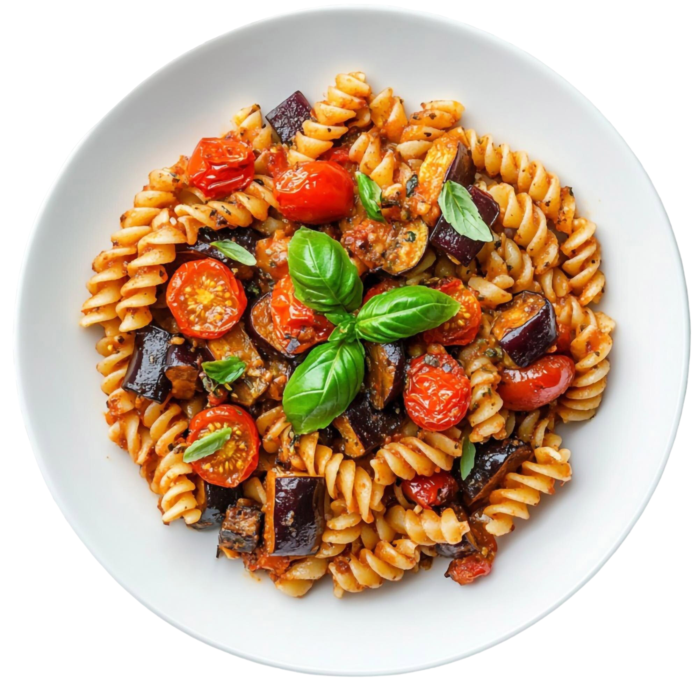

<!DOCTYPE html>
<html lang="en">
<head>
    <meta charset="UTF-8">
    <meta name="viewport" content="width=device-width, initial-scale=1.0">
    <title>Detalles</title>

    <link rel="stylesheet" href="assets/css/styles.css">
    <link rel="stylesheet" href="assets/css/basic-styles.css">
    <link rel="stylesheet" href="assets/css/details.css">

    <link rel="preconnect" href="https://fonts.googleapis.com">
    <link rel="preconnect" href="https://fonts.gstatic.com" crossorigin>
    <link href="https://fonts.googleapis.com/css2?family=Albert+Sans:ital,wght@0,100..900;1,100..900&family=Domine:wght@400..700&display=swap" rel="stylesheet">

</head>

<body class="df centerY centerX w100 vh100">

    <main class="w90 vh90">

        <section id="info" class="df columna spaceb">

            <!--
            <div class="df spaceb">
                <p>categoria</p>
                <ul>tabs</ul>
            </div>
            <h2>Titulo de la receta</h2>
            <span>tipo:</span>

            <div class="df spacee">
                <div class="df gap-16">
                    <iconify-icon icon="hugeicons:star"></iconify-icon>
                    <p>Rating</p>
                </div>
                <div class="df gap-16">
                    <iconify-icon icon="hugeicons:message-01"></iconify-icon>
                    <p>Reviews</p>
                </div>
            </div>-->

        </section>

        <section id="tecnico" class="bordeRojo"></section>

        <section id="ingredientes" class="bordeRojo"></section>

        <section id="pasos" class="bordeRojo"></section>

    </main>
    
    <script type="module" src="assets/js/details.js"></script>
    
    <script src="https://cdn.jsdelivr.net/npm/iconify-icon@3.0.2/dist/iconify-icon.min.js"></script> 

</body>
</html>